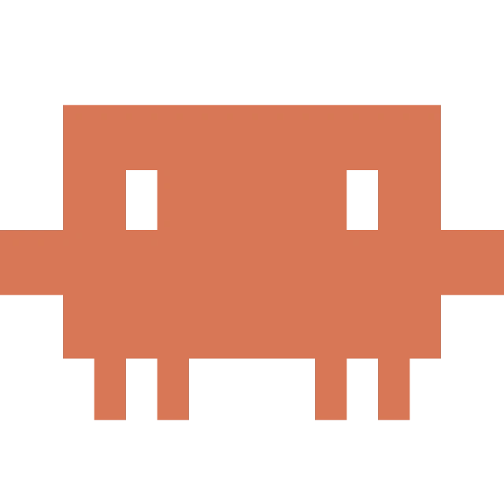
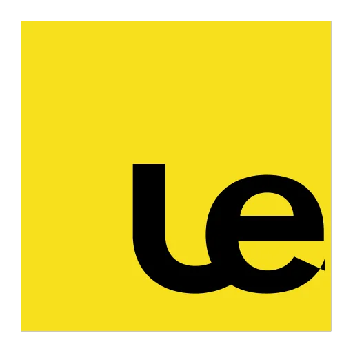

图个明白 — AI 提示词逆向工具
Reverse Engineer Visual Prompts with a Single Right-Click
网上看到惊艳视觉却不知如何写出对应的 Prompt？我用 Vibe Coding 敏捷研发了这款 Chrome 浏览器扩展——右键任意网页图片，3 秒生成结构化中英双语提示词，粘贴到 Midjourney、FLUX 或即梦即可高保真复现。体积小于 100KB，零外部重型依赖，开箱即用。
右键任意图片，3 秒逆向出提示词
完整演示真实网页浏览场景下的唤起与多模态反推流程，即看即所得。
无缝融入日常工作流的极简体验
告别“截图保存-切换应用-上传提问”繁琐长链路，每一步均极致顺畅。
无感观察灵感
在 Behance、Pinterest 或任意网页浏览到优质视觉，直接右键唤起上下文菜单，无需任何截图步骤。
后台自动捕获
扩展后台 Service Worker 自动解析图片真实源地址，利用 Chrome MV3 安全规范与大模型建立轻量连接。
多模态维度解构
针对构图视角、光影类型、色彩搭配、材质细节与镜头参数进行 7 大维度结构化逆向推导。
双语浮层呈现
页面原位滑出轻盈毛玻璃浮层，清晰展示中文语义解构与经语法优化的英文生图提示词。
一键复制与复现
轻触复制按钮即可存入系统剪贴板，支持直接投入 Midjourney、即梦或 Stable Diffusion 高保真还原。
现代轻量级技术栈
拒绝不必要的现代框架负担，追求纯粹的原生性能与极致响应速度。


“最好的 AI 工具往往不是功能最繁琐的，而是无缝嵌入你原有工作流时摩擦力最小、近乎察觉不到存在的那一个。”